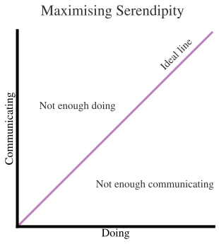

Generating and Accepting Research Ideas
In this chapter, you’ll learn tips and tricks for both generating, and accepting, research ideas. The chapter is mostly advisory: it’s not intended to be a foolproof guide, the last word, or to cover everyone’s preferences—but it is designed to help you get started with generating research ideas and then deciding which ones to pursue and which ones to ditch.
Many people struggle to come up with really great ideas—indeed, it’s probably the hardest part of research. But in this chapter, we’ll try and help you do just that because, and this is the good news, it’s not the case that ideas simply arrive unbidden: you can get into habits, and a frame of mind, that encourages ideas generation. And the secret is that when people do come up with a really great idea, there is often a hidden trail of really terrible ones in its wake that you don’t hear about: the bad ideas are a necessary prerequisite for the odd good one.
This chapter very much stands on the shoulders of giants. This includes Twitter advice by the likes of EmilybyNight, Anthony Lee Zhang, Syon Bhanot, Brad Shapiro, and Julia Bauma. Additionally, this chapter draws on the writings of Don Davis, Paul Niehaus, Richard Hamming, Jason Roberts, Marco Tulio Rubiero, Paul Graham, The Art and Practice of Economics Research by Simon Bowmaker, Chase, Chance, and Creativity by James Austin, and Pranav Rajpurkar’s course on AI Research Experiences.
Generating Ideas
It all starts with an idea. But where does that initial spark come from and how do you create it? You can probably do more than you realise to kick off the creativity that you need to start generating research ideas.
Seek serendipity
One useful way to think about making your own luck is ‘increasing your serendipity surface area’. Sure, you work in a field, and you know, more or less, what’s going on. But there are practices you can indulge in that will stir the pot of thoughts about your topic in your head and help to create new ideas from them.
It’s perhaps useful to pause and think about what luck really is for a moment, because it will help to outline how you can give your own luck a nudge in the direction you want when it comes to ideas. In his 1978 book “Chase, Chance, and Creativity”, James Austin talks about four kinds of luck in the context of creativity:
- blind luck, which falls out of the sky—think being born wealthy
- persistent tinkering luck or luck from motion: stirring up existing thoughts, ideas, models, and other assets of research naturally leads to new combinations that are themselves valuable
- prepared mind luck or luck in preparation: where you use your expertise and knowledge to apply judgement to see the value in what others might dismiss. You might latch onto a puzzle that others would ignore as an irrelevance. Louis Pasteur captured this well when he said “Chance favours the prepared mind”.
- perfect storm luck or luck unique to you, where you are the undoubted expert on a topic and are one of the few who is in the right place, at the right time, with the right knowledge to bring together everything that is required to create a brilliant new idea or approach.
While this can be a useful framework to think about what strategy might work best for you right now, the important point here is that blind luck is just one type of luck, and there is a LOT you can do to put yourself in a better position to generate ideas.
So what are the actions you can take to start improving your idea-generating powers?
Goals vs systems and serendipity
Many trained in research are used to being goals-oriented: you have a specific objective in mind, and you go out and do it. However, serendipity, by its very nature, is not something you can go out one day and complete like a chore. Unlocking serendipity is more about habits and systems for behaviours that increase the chances that you’ll discover information that could form part of a new idea. It’s worth stressing this: coming up with original ideas isn’t something that you can make happen at will, nor is it a linear path.
It is the routines and habits, rather than specific actions, that you’ll need to help you generate ideas. A very simple example of a habit that increases your luck surface area is attending the weekly external seminar: not only will you hear about research that is valuable enough for someone to have been invited to talk about it, but you’ll get to make a new contact too. Another example would be arranging to meet other researchers in your area to just talk through what’s going on—different people read what’s between the lines of a paper in different ways, and can help you see things that you didn’t know were there.
While we will see more detailed examples shortly, the headline message for how to increase your luck surface area is that you should stop “doing” so much and start putting yourself out there a bit, ie start “communicating” more. In the figure below, you want to trade-off the “doing” and “communicating” to maximise serendipitous idea discovery.
Often, your “communicating” will be without a specific purpose in mind because you don’t know yet what ideas or concepts will flow out of the interaction—that’s the point! Of course, it’s highly uncertain how useful any particular interaction will be, and so goal-oriented people find this very hard. Because of this, you may need to be systematic in how you go about communicating more, and in how much time you spend on it. But zero is too little if you’re trying to find good ideas.
Finding content to throw into the brain mixer
If your brain is a bubbling pot, you need to be throwing high quality ingredients in to make what comes out deliciously good, and you need to be doing this constantly like it’s perpetual stew. So where do you get the ingredients and how can you top them up systematically?
Some top tier places to look include:
- research in your own field. We really recommend setting up notification emails for working papers and journals in your field. With so much published, keeping on top of the literature has become a giant task, so the more you can pinpoint or filter down to what you’re specifically interested, the better. You can also periodically search for relevant content (for more on search, see Putting the Search in Research). In particular, in your reading, you might want to note down what datasets are available that others have used. Do not disregard survey papers. Attending conferences is one of the most powerful ways to keep on top of what’s happening, but it is expensive—if you can’t do that, check out recordings of the same talks as a cheaper alternative (but you do miss out on the chance to ask questions and make connections in the coffee break).
- research in adjacent fields. New ideas tend to come from connections that reach out of the core of your knowledge and into a fizzing, fuzzy periphery. Research in similar fields is in the ‘adjacent possible’ of your current knowledge, and therefore could form useful connections to what you’re doing. (Research in far flung fields could too, but the chances are smaller, so you’ll want to spend proportionately more time on adjacent fields.) Again, survey papers can be your friend here.
- courses. Human capital deprecates quickly, and, simply by topping it up with the latest methods from new university courses, new ideas could be sparked.
- newspapers, magazines, newsletters, blog posts, and books. For economics, the Financial Times and Wall Street Journal are obvious ones, but there are others with a wider appeal that may deal with important issues faced by, for example, consumers. Simply picking up the most popular newspaper of the day could be the source of an idea. Newsletters such as Construction Physics and New Things Under the Sun explicitly point to untapped research questions.
- the publications of regulators and other government or public sector bodies. Public sector institutions always have thousands more questions outstanding than they have the ability to answer simultaneously, and they do talk about them through their publications. You can simply go and read some of this content to pick up on questions that have a direct relevance to policy. They tend to be a great untapped resource, so you may find ideas that others have missed too.
- older books in libraries. You can get a long way by going to the library, heading to the section relevant to your field, and just picking out stuff that’s been forgotten, neglected, or is out of fashion and seeing if it’s due a reboot because it can say something about the current state of the world or because methods can now tackle it more effectively.
- conversations with people, especially if they are more senior (and have a birds’ eye view) or are extremely fresh and don’t accept everything that the rest of the discipline takes for granted.
- what’s going on in the world and affecting people, especially if no-one else seems to be talking about it through the lens of your field.
With all of these, you run the risk of getting bogged down in reading every detail: don’t. The point here is to look over lots of content quickly and bag anything that could be useful later on, or which seems interesting even though there’s not an obvious way to use it straight away. Hoover up these tidbits on a regular, disciplined basis and do not abandon the practice simply because it does not immediately lead to a great insight. Instead, think of this process as a long-term investment: you are filling your memory and note buffers. The more you have at your fingertips, the easier it is to make connections that spawn ideas.
One way to impose some order on the information flow (be it notes, references, pictures, charts, puzzles, oddities, links, or any other media), is to use one of these two free note-taking tools:
These are not the only tools available. You can read more about setting up Obsidian with the Zotero reference manager here.
Creative thinking processes and connections
One way to think of creativity is as the ability to see connections between things. In the previous section, there were lots of suggestions of where to get the building blocks of ideas from. But you need to be able to see connections, links, and interesting features of these in order to capitalise on all that information gathering.
Here are some ideas for how to capitalise on collected thoughts:
- Use some kind of note taking system to record ideas, thoughts, concepts, methods, or whatever other asset you think is foundational to your research creativity. You cannot memorise everything you have seen. As noted above, we recommend Microsoft OneNote or Obsidian for this. Both offer ways to link between topics, and the latter will display the literal connections between pages you have on different topics.
- Ask the big questions of the information you have gathered. You can fit these into, broadly, three categories: those about your field, those about the real world, and those about the assets (data, methods) that are available. Some examples of each of these are:
- The field: What questions are others asking? What are they not asking? What is widely believed and how strong is the evidence for it? Where are people making assumptions? What are the big challenges to further progress? What is important but relatively under-examined?
- Reality: What is actually happening in the real world as it relates to your field? What decisions are people making because of it? How is the environment changing and why? What facts, patterns, or puzzles exist that have been neglected or misunderstood? What techniques are state of the art?
- Assets: What datasets are being used by people? What changes / natural experiments might be available to use to answer questions? What partners might be interested in collaboration? What new methods have been developed that could give a better read on an old question?
- Investigate failures and annoyances. Often, when a line of enquiry fails, people are tempted to discard it… but before you do, is the absence of a relationship as interesting—or more interesting—than its presence? Such failures, and even annoyances, are fertile ground for new research ideas. At the very least, it’s useful to file these blips away so that you can come back to them in future. Maybe you don’t have many failures to hand: one way of generating them is to take a popular framework and apply it in a new context. It likely won’t work, and then you have a thread to pull on. An example would be using an AI model architecture to do something new.
- Investigate puzzles. As the great plasma physicist Malcolm Haines once said at a dinner in his honour, “bring me your mysteries”. Humans feel a draw towards a mystery that is as powerful as it is pervasive: think of how detective novels dominate the best seller lists! Whenever you see a puzzle, log it. It could be that there’s an interesting phenomena underlying it, or that others noticed it too and would be grateful to understand it better. Be slightly wary of well-known “puzzles” that have already attracted much attention from giants of the field as, unless you’re bringing a new angle, you already know that others tried and failed to crack them, so a number of ideas will already have been exploited.
- Use analogies and mapping. Try to find analogies that map across from a solved problem over here to a tough problem over there. This goes beyond applying technique Y to problem X, which can end up in boring incrementalism. A deeper example would be applying the idea of vector subspaces to realms beyond, say, natural language processing: perhaps putting firms in one as a starting point to a natural and data-driven, rather than top down, firm classification. In mathematics, seeing the analogies across sub-fields has been astonishingly fruitful.
- Keep a list of the big problems in the field, and problems that you think are important. Richard Hamming describes how great scientists have 10 or 20 important problems in their mind at all times that they are looking to attack and, whenever they hear a new idea, they are immediately able to see if it can be used to chip away at a problem on the list. It’s about noticing connections that are relevant to the valuable problems to solve. However, there will be plenty of others doing this for the big problems in the field, and some of them may be better placed to tackle those problems than you (because of luck, judgement, or both) so it’s worth tacking toward the problems that you think are important and that interest you. The bottom line is to be clear about the questions that you’d like to go after using any relevant new ideas that come your way.
- Improve on what others have done. This is an obvious way to generate research projects. But be wary! First, there’s a big risk of incrementalism—where you make a slight improvement than inevitably ends up with only a slight impact too. How many papers add a single extra feature to a VAR or DSGE model? It’s rarely exciting or worthwhile. A frightening number of papers would struggle to sell their value add relative to what has gone before. Second, be a bit wary of the ‘future research’ section of papers because it’s likely the authors are already thinking of doing those extensions and have an advantage in doing them, and because, if they were straightforward, the authors would have probably included them in the original paper. When you see an idea appear in that section of a paper, it’s typically already been selected as being low return on investment: otherwise the authors would have done it! That all said, if you’re strategic about the improvements you’re working on, this is one of the key ways to get traction within your own research community. Pretty much every idea you exploit should be improving on some existing work in some way. It’s more a matter of using unbiased critiques of a paper to generate the ideas than falling in with the views of the author(s).
- Think about what would be useful. What does everyone in the field need a framework for? What blocker do they keep running into? What would allow for the biggest amount of progress by the most people? Generally, these will be big projects that you might not be able to tackle unless you have the luxury of time and other resources. But sometimes you’ll find a niche that you can inhabit that ultimately helps out a lot of your peers.
Which ideas should you develop further?
You’ll need to dispense with most of your ideas, because they’ll be bad. In fact, most ideas are terrible. A hit rate of one good idea in every hundred would in fact be very respectable.
If you’re looking for a barometer for which ideas are ‘good’, imagine the paper has been published and the results are out in the world. Think: would you feel proud to have published that paper? Will it have an impact? If the work is successful, will it be easy to answer the questions in the hook and motivation section of Writing Papers? If the answer is no, or just indifference, it’s probably not a good idea.
Of course, this assumes some kind of foresight. I don’t think you can predict which papers will take off and which will be unfairly unloved. But even though any creative process is inherently noisy, and you cannot predict how an idea will go down, you are likely to be able to rank ideas—and that’s all that’s needed to develop beyond this first stage.
Even so, this may be easier said than done. A first pass would be to group the ideas into broad categories of strong, intermediate, and weak. But we’ll now turn to other strategies you can adopt to develop ideas a little so that ranking becomes easier.
Filter to the most promising ideas
Narrowing to a smaller number of ideas to take forward is really important because you’re not going to get the opportunity to do many papers in your entire lifetime. Let’s say you are an extremely productive economist and manage to publish five papers a year: over a 30-year career, that’s only 150 papers.
Good papers and bad papers take more or less the same time. Some people have called a similar version of this idea, “Summers’ Law”, after Larry Summers, and it says that it takes just as much time to write an unimportant paper as an important one… so you may as well focus on an important one! Some bad papers take longer to get published.
Given the huge time commitment of each one, there’s no point working on papers that don’t pack a punch. Another reason to work on the most promising ideas only is that we live in a world with many distractions and limited attention. Most scholars want their work to be read, used, and even enjoyed. Also, if you are in economics, the returns from getting into a higher ranked journal are disproportionate, so you’ll want to focus on quality over quantity. Finally, it’s also sadly true that research papers rarely surprise to the upside—it’s much more common for them to surprise to the downside and be less impactful than you’d hoped. Most of us have optimism bias about our own work, and will overestimate the impact. If you set about to do a merely okay paper, that’s going to be the upper bound for what comes out at the end. Again, the lesson is that it’s best to aim high, and focus on the ideas that pack a punch, rather than waste your time on bad ideas.
Finally, ask yourself: do you want to improve the world or do you want to be able to say you published some papers in journals? Most of us want the ideas we spend time on to make a difference! Which is by far the best argument to dispense with the less good ideas and focus on the ones that you genuinely think will move the dial.
Put your effort into the stages of developing an idea that are cheap
The model that Pixar uses to be such a hit factory is instructive here: even though they work in a creative and uncertain industry, film-making, they have hardly ever missed. The core of Pixar’s trick seems to be i) put effort into the cheap phases and ii) aggressively iterate and improve upon the idea.
Under i), what’s cheap is thinking: it’s getting data, transforming data, and running analysis that is expensive. Effort spent doing a project is minuscule compared to effort spent planning it. So this means doing a lot of thinking about the process, including what could go wrong and what could go right, up front. It means rejecting a lot of ideas before doing any analysis whatsoever because, for example, the data aren’t there, the natural experiment isn’t plausible, or you don’t have the right skills. Famously, talk is cheap (even if many with analytical leanings find it painful). If you have the germ of an idea, find an expert, friend, or peer you trust to keep it to themselves and quickly get constructive feedback on it that will save you, potentially, months or years of wasted time.
That leads neatly into ii), which is aggressively iterating and improving. Few ideas start out great. They can be improved, but you probably need a combination of thinking and discussing to do it. Keep going round with it, tweaking and perfecting, until it really stands up as a good idea that can go the distance and that you’d be proud to deliver.
Look for fatal weaknesses; try to fast fail
When you come up with an idea, it’s very tempting to overlook any issues or weaknesses, and think ‘I can cross that bridge when I come to it’. But you need to do the complete opposite. You must obsessively look for the weaknesses and focus on them, for they are what will hold back the work. As an example, suppose that a piece of work relies on three things to work: the first two will come off with probability 80%, while the third only has a probability of working of 20%. All else equal, you should first try to figure out whether the third part will work or not. More than likely, it won’t and once you’ve thought through it enough to realise this, you can discard the project and move on without wasting any more time.
The ‘fast fail’ or ‘fast first cut’ is another way of articulating the same philosophy: start to try something out, see if you can kill it easily because of some fundamental, unconquerable issue, and, if you can’t, there may be potential. Try to falsify your entire project quickly. Your fast fail might just discover that the effect size must be bounded between zero and a small number, and you might know from the context that a number in this range will not interest many people, so you can break it off there (though null results can be extremely interesting depending on the context). To give practical advice, you can create artificial data (using a plausible data generating process) for the parts that you’re more sure about and see the project will work (eg even with perfect data, would you be able to see this effect?) The economist Steven Levitt recommends killing off projects very quickly using fast fails, and puts his productivity partly down to this approach. However, do note that this has the potential to create distortions in the results that get published and it may not be good for the field as a whole if everyone does this aggressively, all the time. But there has to be some balance between personal pragmatism and theoretical best practice (until incentives become aligned by a system for rewarding research that accepts more “failures”).
The kinds of questions you should be asking yourself in both of these approaches do require some future-gazing. You want to know what the possible spectrum of outcomes looks like, and how likely it is that each part of the project succeeds or fails in its objectives to create those outcomes, and whether—if some do fail—there is anything that would be recoverable. Some projects will have very spiky outcome profiles, others are more defensible regardless of what they find—you can balance the overall risk by having a portfolio of projects. Predicting the future and making these judgements is hard but even a very rough estimate of success will force you to think through the constraints around success. Specific questions might include: “What impact will this project have if it succeeds?” and “What is the shortest path to seeing if this idea works or not?” Again, you can’t predict the future so you’ll want to acknowledge there’s some randomness you can throw into the mix here, and that the best you can do is get a rough sense (which is all you need to move forward).
Choose work that is robust, including to changing circumstances
There are a lot of unknowns in research, and therefore there is a lot of uncertainty about whether all ideas will still be relevant in one to three years when you might actually be trying to sell the thing you’ve worked on to others. For this reason, it’s a good idea to pick (some) ideas that are robust to changing circumstances.
These could be circumstances external to the project: like the current, possibly fleeting, interest in a topic or the popularity of a particular methodology. The world could very well move on between initiation and completion. To be honest, if interest in that thing is so fickle, perhaps it’s not a very good research topic anyway. Plus, being the 16th paper to come out that year with that method—as others attempt to latch on to the zeitgeist too—isn’t likely to catch anyone’s interest.
This relates to another nugget of advice from Steve Levitt, which is to find your niche. Unless you are lucky, extremely talented, well resourced, have the right connections, and have good timing, it’s unlikely that your work is going to be the thing that people reach for when there is tons of other work on the same topic. So find a niche where you are the dominant player, and no-one else can do it quite like you do. Many successful researchers talk about finding a niche that no-one else was paying attention to.
There could also be circumstances internal to project: will people be interested regardless of the result? Your fast fail attempts may not have been enough to give you a sense of what the end result might be. Let’s say you’re looking for the effect of X on Y and you can’t know it at all unless you undertake the project for real. You need to ask, “if I get a null result, is that still interesting and how would I sell it?”. As Brad Shapiro has said, “before doing any analysis at all, think hard about what you would learn under any contingency of results”. An idea that is only interesting under a particular result is going to be less robust, and more risky to pursue, than one that has impact regardless of what the answer is.
There’s a third type of robustness, very probably underrated: make sure the idea you are pursuing is robust to your own changes in mood and interest! It’s so important that you find a topic that you’re passionate about, and that you will still be passionate about three years hence.
Is the idea feasible?
This very much relates to the ‘fast fail’ advice above, but it’s worth digging into the different types of feasibility before committing to going further with a project. You’ll want to check that:
- the right data i) exist and ii) are obtainable
- that the methods exist to do what you want to. Sometimes this interacts with 1: think of data that is only on a government secure server that cannot feasibly run large language models because it has an air gap with the internet and is running Windows ’98.
- that you have the right skills to complete all parts of the project
- that you have enough time to do the project (remember to add 50% to any time estimate you make)
Will the idea make an impact?
As noted, research time is short, bad papers take as long as good papers, and you are presumably in this business to improve the world rather than to squeeze uninteresting work into published volumes. So you’ll want to think hard, and critically, about whether your research idea is really going to make an impact and move the dial in an area.
We’ve all read research papers with weak impact statements, things that say “this is important because other people also looked at it”. Or, another and even weaker variant, “this is important for policy”. Neither of those sentiments give any real clue why a reader or anyone else should care about the research.
Perhaps the biggest and most useful metric for deciding whether an idea will make an impact is the public good: will the world be genuinely better off armed with the knowledge released by this research or not? If the answer is no, you’ve got to ask yourself what the point is. This isn’t entirely a selfless question by the way: a big impact on the public good will mean lots of interest and even acclaim. While “the public good” may be a high-level and slightly vague bar, there are ways to start getting at it. One is to write out an equation of the form
\text{impact} = \text{number of people affected} \times \text{impact on people}
where you can think of the right-hand side as having been discounted over the future if you like. The point here is that if you come up with an idea that only applies to a vanishingly small number of people and doesn’t even affect them very much, it’s unlikely to be super interesting. But an idea that says something about most people and could affect them deeply through it being used for policy, for example a widely applicable model of consumption, gets a much higher impact score. Note that the effect could be bad, but it would still be a high impact score because the knowledge could help improve the existing situation—think of an example where it is discovered that many consumers do not buy the optimal amount of health insurance and the piece of research stimulates a redesign of health insurance to provide cheaper, better coverage.
While this might seem like too grand an approach for something as small as a published research paper, and perhaps works better as a guide for whole nations, it’s hard to see why it isn’t as true at the micro level as it is at the macro.
The impact approach is very high level, but there are some hints that you can use to prompt yourself on whether the idea is going to have a decent impact.
One approach is to ask whether you are working on a question that has a substantive real-world counterpart, and has a magnitude that would make it genuinely salient in peoples’ lives. In trying to convince yourself and others, you need to capture what that real-world relevance is and show that its magnitude matters: it’s no good doing a lot of work on an effect that is equivalent to a few pence per person per year in the USA as your specification and model error will dwarf it many times over, and people won’t have any reason to pay attention to it anyway.
Novelty is another way to generate impact. None of us is able to see how a more novel idea released today might be taken up (through those creative processes featured at the start of the chapter) in another context and used to create more impact. You will of course have to convince the readers of your paper that the idea is both novel and also important in its original context. One way to understand whether you’ve hit this bar of novelty is to think about someone who knows the field you’re working in who comes to read your work: coming away from it, would their understanding of how the world works, or how they can understand the world, have changed? For example, for a theory paper, this could take the form of showing that a new method can shed light on a previously opaque problem. Another example would be that, under reasonable assumptions or using data, there is an outcome that had not been thought possible—such discoveries change worldviews.
Unfortunately, another metric you can use is: assuming this work goes as well as expected, would it make it into a top journal? Such considerations are annoying, because the impact of the work on the world is much more important than what website it is on, but these are correlated and no-one is going to use your ideas if they don’t see them in the first place.
Checklist of questions to ask yourself before going further with an idea
This section draws together some of what has already been covered into a handy checklist to help judge whether an idea is worth pursuing further and what it is really about.
- Is this the best idea I’m likely to come up with in the near future? What might it crowd out?
- What will this project do?
- What is the high level reason why this topic is important?
- What is the value add or marginal contribution relative to what has gone before on this topic?
- What will the impact be of this work?
- Is the project feasible in terms of data, techniques, and skills?
- Do I have an advantage in doing this idea?
- What probability is there that each part of the work fails?
- What is the least likely to work part of this idea and can it be shown to be conquerable or not?
- What fast fails can I try to falsify that this will work?
- Is this work robust to changing tastes and interests?
- Who are the direct stakeholders of this work and what difference will it make to them? For example, who will be pleased/interested/offended by it, and how are the findings likely to change their behaviours?
- What are the closest similar pieces of work, from both outside and within academia?
- Who will be a continuous sounding board for this idea?
Accepting research ideas
So, you’ve got some strong research ideas that are feasible, will have a big impact, and that you would be proud to complete. It seems like your course is clear: now you get on with them. Well, no… the end isn’t really the end, because you must constantly reevaluate whether this or that research project is the best use of your time, even when they are well under way. Knowing about the sunk cost fallacy seems to give economists little protection from it in practice!
The temptation is to pick up the first ‘good enough’ project that comes along. This is unwise, as you might have a better idea a week later, and, once started, it can be hard to stop a research project. Additionally, the time scale for wrapping up a project and cutting your losses is far longer than the time it takes to come up with other ideas.
Instead of making non-reversible decisions about embracing or rejecting a research project, you may wish, at this stage, to gather more information. Remember: planning is cheap, doing is expensive. Every bit of extra information can reduce the uncertainty further and make a path to success, with this project or another, more likely. Even though it has passed every hurdle so far, you should treat your research project still as a possibility rather than a certainty. Avoid saying, “this is the project I’m now working on”, and instead tell yourself that this is the best current lead you are pursuing but you may drop it if the trail goes cold.
At this point, you should be going very hard on the Pixar idea-iterate-feedback approach. Pitch the proposal to some people and see if they buy the story and the impact. See which bits they are sceptical about. Do not take their word as gospel though: treat every piece of info as a good Bayesian would and weigh it appropriately in your overall view of whether to proceed any further. Any scepticism you get is super helpful, not only because it prompts you into thinking again about your assumptions, but also because it gives you targets to try and falsify your hypothesis against, and these will allow you to fast fail your idea. It’s also a cheap way to pick up papers for a literature review down the line! Your colleague may ask, “but didn’t X and Y do this already?” and you know that this is a good place to start on checking the novelty of your work. Even if you completely disagree with the negative feedback you receive, which you might, and you might be right to do so, that feedback will help you understand how to present the work in a way that wins over sceptics.
This is also a good time to go one step further on the fast fails. Perhaps you didn’t get around to creating artificial data according to the process you think exists; now is a good time to do it. If you can’t find the effect you’re looking for in perfectly clean data, you’re unlikely to find it in the real-world stuff. Simulation studies will save you time in so many ways: telling you when your design isn’t actually feasible, forcing you to think about the processes involved, and highlighting key data dependencies. Suddenly, the realistic end-to-end pipeline you’ll need to produce can become clear.
The bottom line is that you aren’t done once you’ve picked a project. Things fail, or stall, or are more challenging than anticipated. So you must constantly ask: is this still the best path for answering the question? Is this the right question? And could my time be better spent elsewhere? The truth is that the cycle of feedback, improvement, and rejection shouldn’t stop at any point of the research cycle!